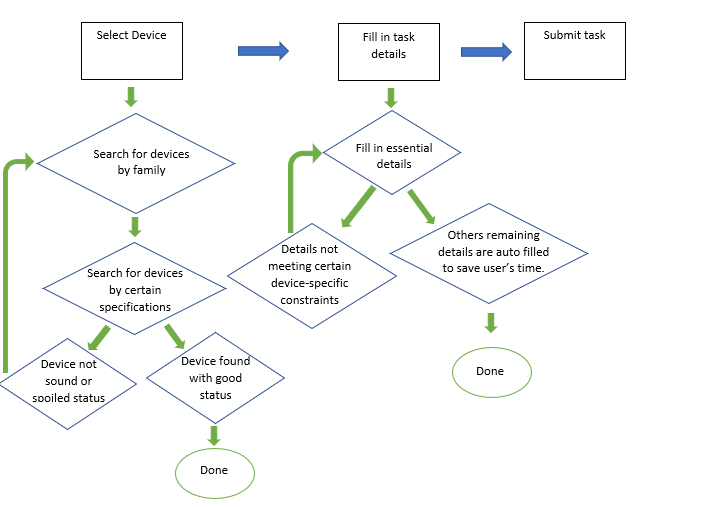
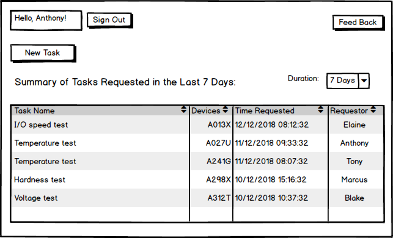

Design a web interface for the ATE Characterization Department to submit task requests. As of now, the task requests are usually done by emails and hence hard to keep track.
Problem Statement
Overview & Background
The ATE Characterization Department is in charge of testing Xilinx intergrated chips and see if they meet the standards laid out by their partnering companies.
Units storages and testings need to be monitored in case of damage or lost. The current method of requesting tests through emails has proven insustainable and time-consuming.
Solution
A web interface that provides the team a tool to keep track of task requests, store them in a MySQL database, and alert the respective personel of the task details.
Different functionalities include checking if units is currently lost or damaged, restricting certain testing conditions with certain device families and certain readily filled out text fields to cut down on the time spent on making these requests.
Survey Analysis
Being an intern in the company for merely 2 weeks, I roughly had an idea of how the process of unit testing is done, from the requesting, procuring of different units, running the actual test and reporting test results. However, I would still need additional input from team members regarding the requesting procedures.
I emailed my colleagues a google survey that I created and received a total of 14 responses along with two valuable insights:
- Requesting tasks through emails is time-consuming: An overwhelming 71.4% of my team members spend more than 10 minutes on requesting 1 task
- All 4 proposed challenges are equally problematic: There is an even distribution of what makes requesting tasks challenging.
User flow

prototypes

Please use a wider browser to load :)
Due to confidentiality issue, I am unable to provide the final product :(
Reflection
Prior to this project, I had no experiences regarding UI/UX design. Coming up with prototypes and getting users' feedbacks through weekly meetings helped me understand the design process better. I throughly enjoyed the process of learning HTML/ CSS myself and apply them straight away. I also appreciate the amount of support I gathered during my internship at Xilinx.
Tool used
- Html
- Python
- Css
Other works

Continental Confluence Dashboard
I designed an admin dashboard out of my own initiative as a tools for upper management to keep track of Confluence usage within Continental Automotive Singapore Pte Ltd.
Summer 2018